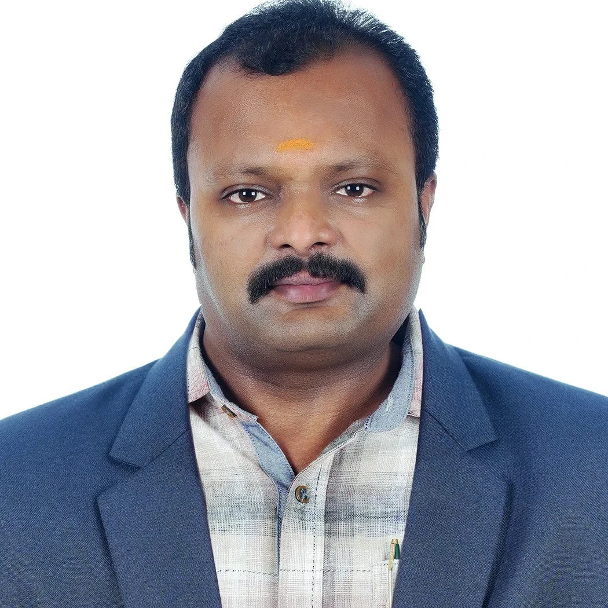

Knowledge • Skill • Success
Knowledge • Skill • Success
The Department of Instrumentation & Control Engineering, established in 2005, has been functioning with excellence and dedication towards producing competent engineers required for the rapidly evolving industrial and technological sectors. Our department provides students with a strong academic foundation in areas such as industrial instrumentation, process control, sensors and transducers, automation, programmable logic controllers (PLC), embedded systems, industrial communication, and modern control technologies
Our curriculum is designed to impart both strong foundational theories and intensive practical skills in the laboratories. Students gain comprehensive hands-on operational experience with industry-standard machinery, instruments, and software systems.

HOD
"Welcome to the Department of Instrumentation & Control Engineering. The Department of Instrumentation & Control Engineering, established in 2005, has been functioning with excellence and dedication towards producing competent engineers required for the rapidly evolving industrial and technological sectors. Our department provides students with a strong academic foundation in areas such as industrial instrumentation, process control, sensors and transducers, automation, programmable logic controllers (PLC), embedded systems, industrial communication, and modern control technologies. We continuously focus on enhancing both the theoretical knowledge and practical skills of our students through well-equipped laboratories, industrial visits, internships, seminars, workshops, technical training programmes, and project-based learning activities. Our experienced faculty members are committed to guiding students in developing technical expertise, analytical thinking, problem-solving abilities, leadership qualities, time management skills, teamwork, innovation, and professional ethics. I encourage every student to make the best use of the opportunities provided by the department and the institution and strive for excellence in both their academic and professional careers."